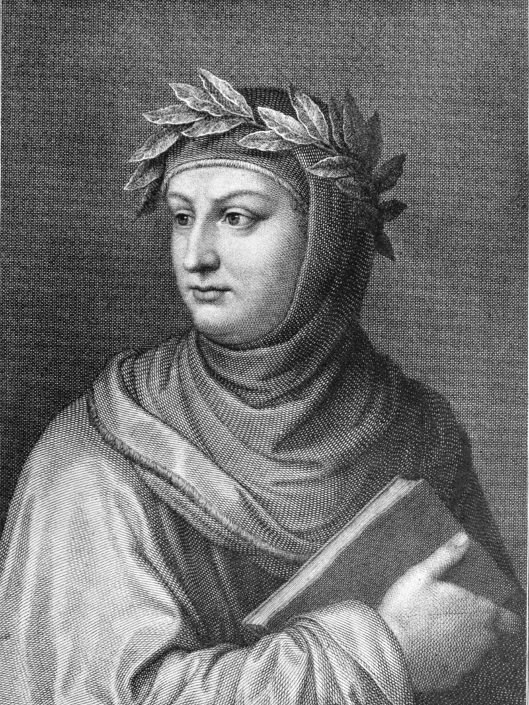
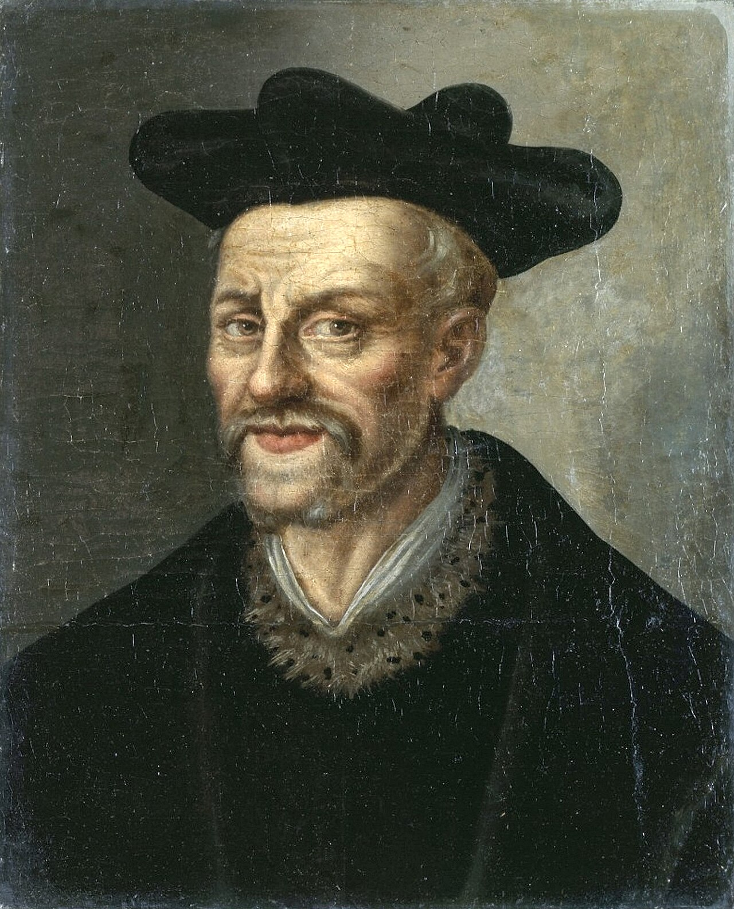
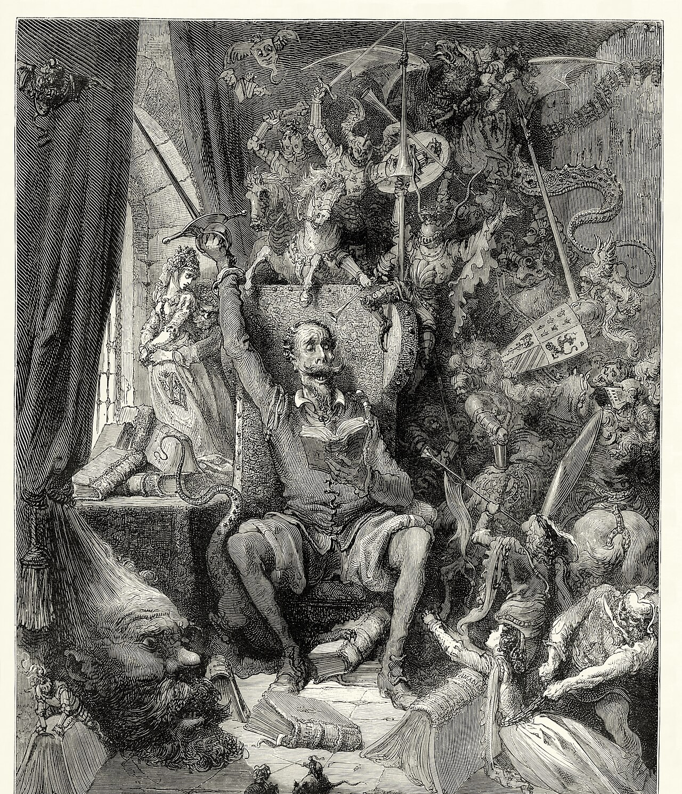
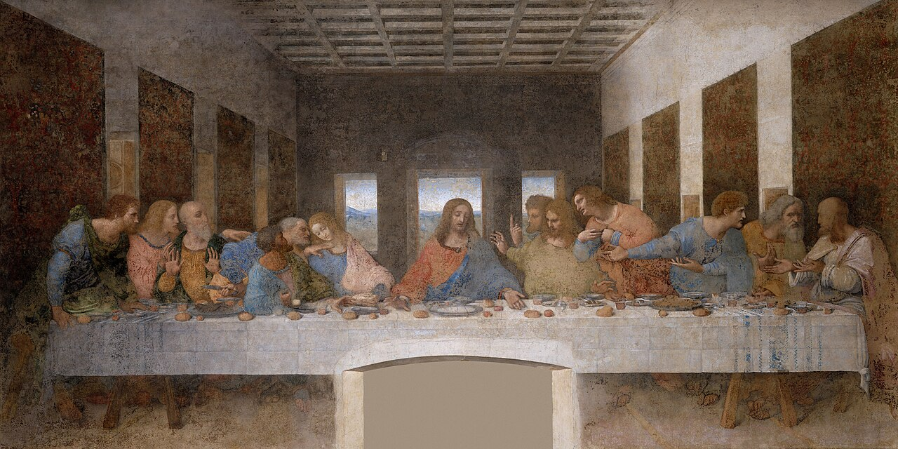
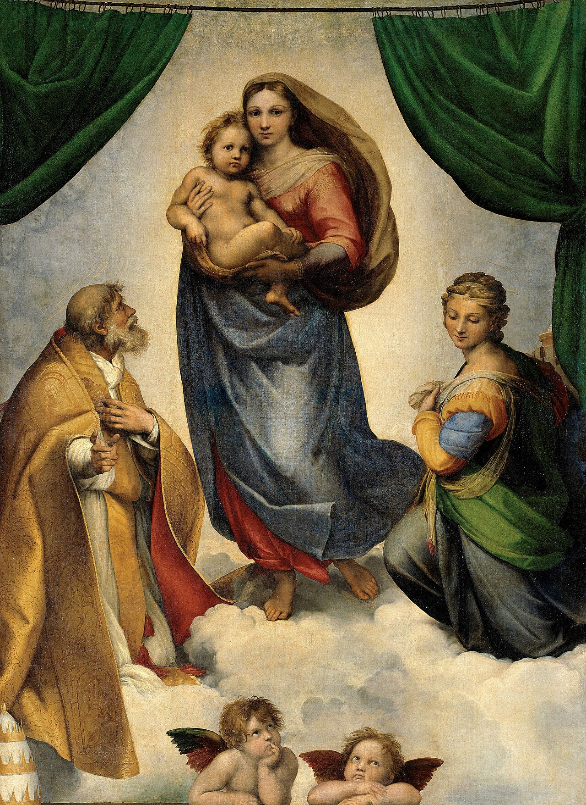
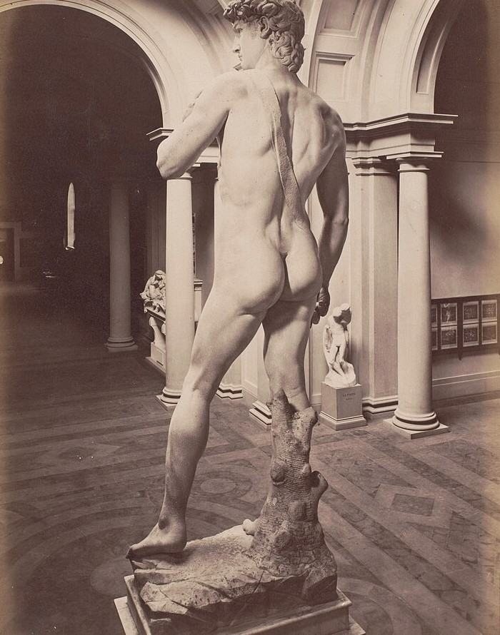
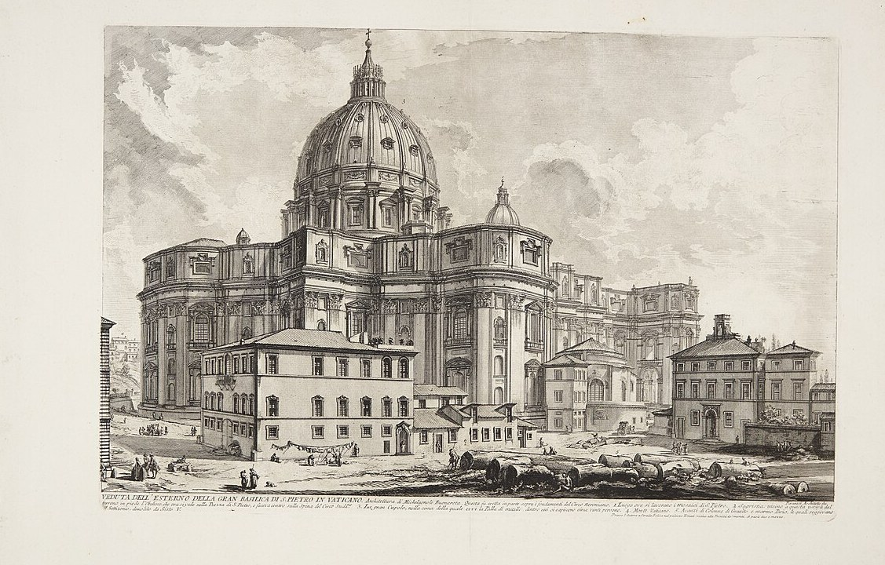
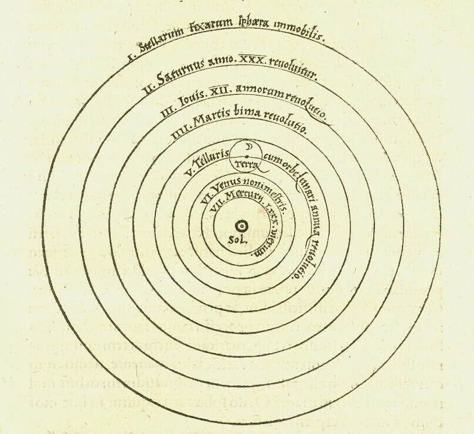
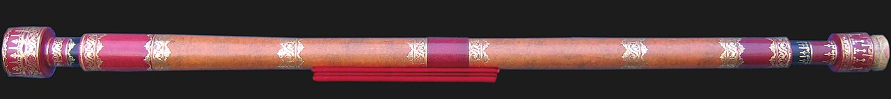

Mi-quen-đơ Xéc-van-técMiguel de Cervantes · Tây Ban Nha
Đôn Ki-hô-tê
Kịch
Uy-li-am Sếch-xpiaWilliam Shakespeare
Ham-lét · Ô-ten-lô · Rô-mê-ô và Giu-li-ét

Bô-ca-xi-ô

Ra-bơ-le

Đôn Ki-hô-tê
Sếch-xpia
Tiểu thuyết và kịch
Văn minh Phục hưng · Lịch sử 10 · Bài 6
4 / 15
Hội họa · từ I-ta-li-a lan ra châu Âu · thế kỉ XV – XVI
Hội họa đạt đến đỉnh cao
Lê-ô-na đờ Vanh-xiLeonardo da Vinci
Bữa tiệc cuối cùng · Nàng Mô-na Li-sa
Ra-pha-enRaphael
Trường học A-ten · Đức Mẹ Sít-tin
Trong Trường học A-ten có sự hiện diện của các học giả Hy Lạp cổ đại.

Bữa tiệc cuối cùng
Nàng Mô-na Li-sa
Trường học A-ten

Đức Mẹ Sít-tin
Hội họa thế kỉ XV – XVI
Văn minh Phục hưng · Lịch sử 10 · Bài 6
5 / 15
Điêu khắc · Mi-ken-lăng-giơ
Hai tượng tiêu biểu
Mi-ken-lăng-giơMichelangelo
Tượng Đa-vít · Tượng Đức Mẹ sầu bi
Điêu khắc bắt đầu từ I-ta-li-a, lan ra khắp châu Âu.

Tượng Đa-vít
Tượng Đức Mẹ sầu bi
Mi-ken-lăng-giơMichelangelo
Văn minh Phục hưng · Lịch sử 10 · Bài 6
6 / 15
Kiến trúc · phong cách Phục hưng
Hình học, đối xứng, tỉ lệ
Công trình tiêu biểuSt. Peter's Basilica
Vương cung Thánh đường Thánh Phê-rô, Nhà thờ Thánh Pi-tơ (ở Va-ti-căng).
Yếu tố hình học
Tính đối xứng
Tỉ lệ

Vương cung Thánh đường Thánh Phê-rôNhà thờ Thánh Pi-tơ, Va-ti-căng
Văn minh Phục hưng · Lịch sử 10 · Bài 6
7 / 15
Khoa học · Thiên văn học là lĩnh vực nổi bật nhất
Đẩy lùi sự chi phối của thần học
Ni-cô-lai Cô-péc-níchNicolaus Copernicus
Thuyết Nhật tâm
Gioóc-đa-nô Bru-nôGiordano Bruno
Chứng minh Mặt Trời chỉ là trung tâm của Thái dương hệ và tồn tại trong vũ trụ vô tận.
Ga-li-lê-ô Ga-li-lêGalileo Galilei
Chế tạo kính thiên văn để quan sát bầu trời.


Thuyết Nhật tâmKính thiên văn
Văn minh Phục hưng · Lịch sử 10 · Bài 6
8 / 15
Kĩ thuật
Nhiều tiến bộ trong sản xuất
Dệt
Khai mỏ
Luyện kim
Đóng tàu
Chế tạo vũ khí
Máy móc · sức nướcChế tạo một số máy móc; dùng sức nước trong nhiều ngành sản xuất.
Dệt
Khai mỏ
Luyện kim
Đóng tàu
Vũ khí
Máy · nước
Kĩ thuật sản xuất
Văn minh Phục hưng · Lịch sử 10 · Bài 6
9 / 15
Tư tưởng · triết học duy vật
Khoa học, kĩ thuật tạo tiền đề
Phran-xít Bê-cơnFrancis Bacon
Đê-các-tơRené Descartes
Tác động to lớn tới chính trị, xã hội
Tiền đề cho các cuộc cách mạng xã hội ở châu Âu
Nền tảng cho bước tiến về tư tưởng, triết học ở các thời đại sau
Phran-xít Bê-cơn
Đê-các-tơ
Triết học duy vật
Văn minh Phục hưng · Lịch sử 10 · Bài 6
10 / 15
Ý nghĩa · trả lời câu hỏi SGK
Thành tựu và ý nghĩa
Hãy nêu một số thành tựu cơ bản của văn minh Tây Âu thời kì Phục hưng và ý nghĩa của những thành tựu đó.
Văn họcHội họaĐiêu khắcKiến trúcKhoa học – kĩ thuậtTư tưởng
Lên án
Lên án gay gắt Giáo hội Cơ Đốc giáo lũng đoạn.
Đấu tranh
Chĩa mũi nhọn chống chế độ phong kiến thối nát đương thời.
Con người
Đề cao giá trị con người và quyền tự do cá nhân.
Dân tộc
Đề cao tinh thần dân tộc.
Cuộc đấu tranh công khai đầu tiên trên lĩnh vực văn hoá, tư tưởng của giai cấp tư sản chống chế độ phong kiến lỗi thời — mở đường cho văn minh Tây Âu phát triển trong những thế kỉ tiếp theo.
Nàng Mô-na Li-sa
Văn minh Phục hưng · Lịch sử 10 · Bài 6
11 / 15
Ôn nhanh · Câu 1 / 3
1
Bối cảnh
Phong trào Văn hoá Phục hưng diễn ra đầu tiên ở đâu?
Trường học A-ten
Văn minh Phục hưng · Lịch sử 10 · Bài 6
12 / 15
Ôn nhanh · Câu 2 / 3
2
Hội họa
Bữa tiệc cuối cùng và Nàng Mô-na Li-sa là tác phẩm của ai?
Bữa tiệc cuối cùng · Nàng Mô-na Li-sa
Văn minh Phục hưng · Lịch sử 10 · Bài 6
13 / 15
Ôn nhanh · Câu 3 / 3
3
Thiên văn học
Thuyết Nhật tâm là thành tựu của ai?
Thuyết Nhật tâm
Văn minh Phục hưng · Lịch sử 10 · Bài 6
14 / 15
Cảm ơn
Cảm ơn Cô và các bạn đã lắng nghe!
?Mời mọi người đặt câu hỏi
Câu hỏi SGK: nêu một số thành tựu cơ bản của văn minh Tây Âu thời kì Phục hưng và ý nghĩa của những thành tựu đó.
Văn minh Phục hưng · Lịch sử 10 · Bài 6
15 / 15
1 / 15Phím: ← → / Space · F toàn màn hình · ? trợ giúp
Slide tiếp theo
Hiện từng ý
Quiz
Bấm đáp án trên slide bên trái, hoặc nhấn → để hiện đáp án.
Cách trình chiếu với hai cửa sổ
Mở index.html bằng Chrome hoặc Edge. Đây là màn chiếu (cho cả lớp xem).
Nhấn phím C (hoặc nút “Bảng điều khiển”) để mở cửa sổ điều khiển. Hoặc mở index.html#control trước, rồi bấm “Mở cửa sổ trình chiếu”.
Kéo cửa sổ màn chiếu sang máy chiếu, bấm vào nó rồi nhấn F để toàn màn hình.
Giữ cửa sổ điều khiển trên laptop: xem slide hiện tại, slide tiếp theo và đồng hồ. Bấm đáp án quiz trên slide thì màn chiếu cập nhật ngay.
→Space
Slide tiếp. Trên slide quiz: hiện đáp án trước, rồi mới sang câu sau.
←
Slide trước, hoặc ẩn đáp án vừa hiện.
F
Bật hoặc tắt toàn màn hình.
C
Mở cửa sổ điều khiển.
Home / End
Về slide đầu / slide cuối.
? / Esc
Mở / đóng trợ giúp này.
Hai cửa sổ phải mở trên cùng một máy, cùng một trình duyệt. Không cần Internet.

 Sếch-xpia
Sếch-xpia Phran-xít Bê-cơn
Phran-xít Bê-cơn Đê-các-tơ
Đê-các-tơ